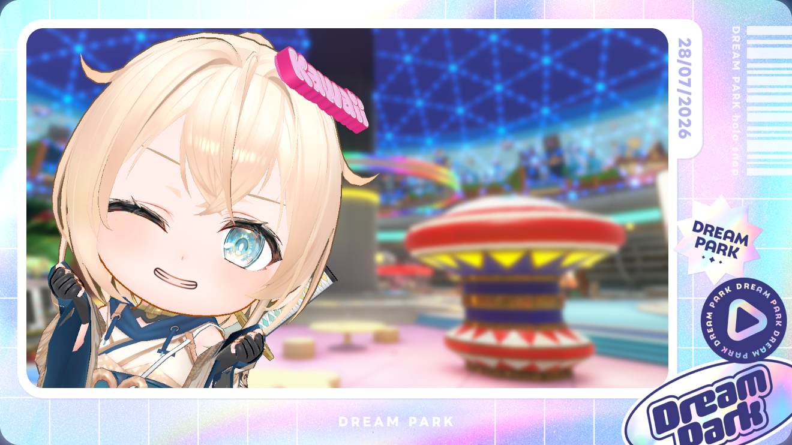

04 — SEDIKIT DI LUAR KODE
Kerja serius,
tetap punya fun.
Sentuh atau klik GIF untuk kejutan kecil.


AVAILABLE FOR OPPORTUNITIESWEB DEVELOPER · BENGKULU, ID
Halo, saya
Saya membangun aplikasi web yang membantu menyelesaikan masalah nyata—dengan antarmuka yang rapi, sederhana, dan mudah digunakan.
01 — TENTANG SAYA
Saya menikmati proses mengubah kebutuhan dan masalah nyata menjadi aplikasi web yang bersih dan berguna. Fokus saya pada Laravel, MySQL, serta teknologi front-end modern—dengan perhatian khusus pada pengalaman pengguna dan detail antarmuka.
Setiap fitur sebaiknya terasa jelas, bermanfaat, dan mudah dipakai.
02 — KARYA PILIHAN
Eksperimen, repository, dan demo lainnya ada di halaman Projects.
03 — YANG SAYA GUNAKAN
Teknologi yang saya gunakan untuk merancang dan membangun produk web.
04 — SEDIKIT DI LUAR KODE
Sentuh atau klik GIF untuk kejutan kecil.
05 — MARI TERHUBUNG
Punya project, pertanyaan, atau ingin sekadar menyapa? Temukan saya di sini.